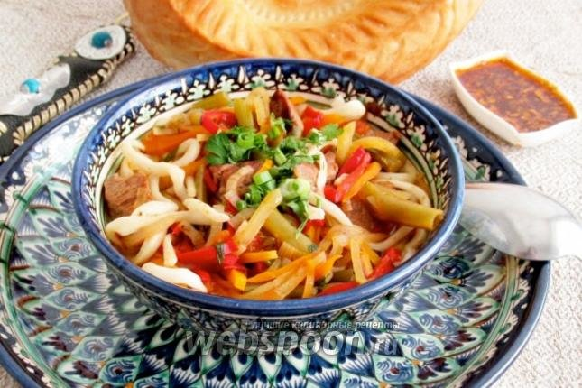

lagman is a dish of meat, vegetables and pulled noodles from chinese and central asian cuisine.
- 2 tablespoons olive oil
- 1 onion, finely chopped
- ½ pound beef chuck, cut into strips
- 1 carrot, cut into thin strips
- 3 small potatoes, cubed
- 1 green bell pepper, cut into 1-inch strips
- 2 tablespoons tomato paste
- 8 cups water
- 2 teaspoons salt
- ½ cup finely chopped parsley
- 2 (8 ounce) packages thin Chinese noodles
- 3 large cloves garlic, minced
- ½ cup thinly sliced celery
- heat oil in a large pot over high heat. reduce heat to medium-high; cook and stir onion in hot oil until golden, 3 to 5 minutes. stir in beef strips, cumin, and black pepper; cook until beef is browned, about 5 minutes. stir in tomato paste and cook for 2 to 3 minutes.
- stir carrot into the pot; cook until coated with tomato paste, 2 to 3 minutes. add green bell pepper; cook for 1 minute. add potatoes and celery; cook for 5 minutes. pour in water; bring to a boil. season water with salt. Reduce heat to low and simmer soup until potatoes are soft, about 40 minutes.
- stir parsley and garlic into the soup. simmer until garlic is soft, 10 to 15 minutes.
- bring a large pot of lightly salted water to a boil. cook noodles in boiling water, stirring occasionally, until tender yet firm to the bite, 3 to 5 minutes. rinse and drain well. divide among serving bowls. Ladle hot soup over noodles.